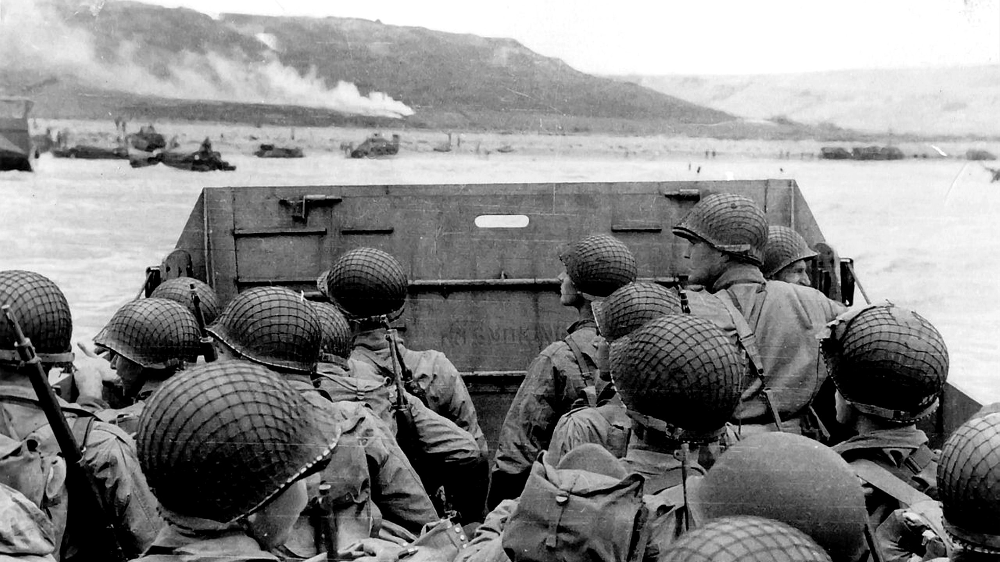
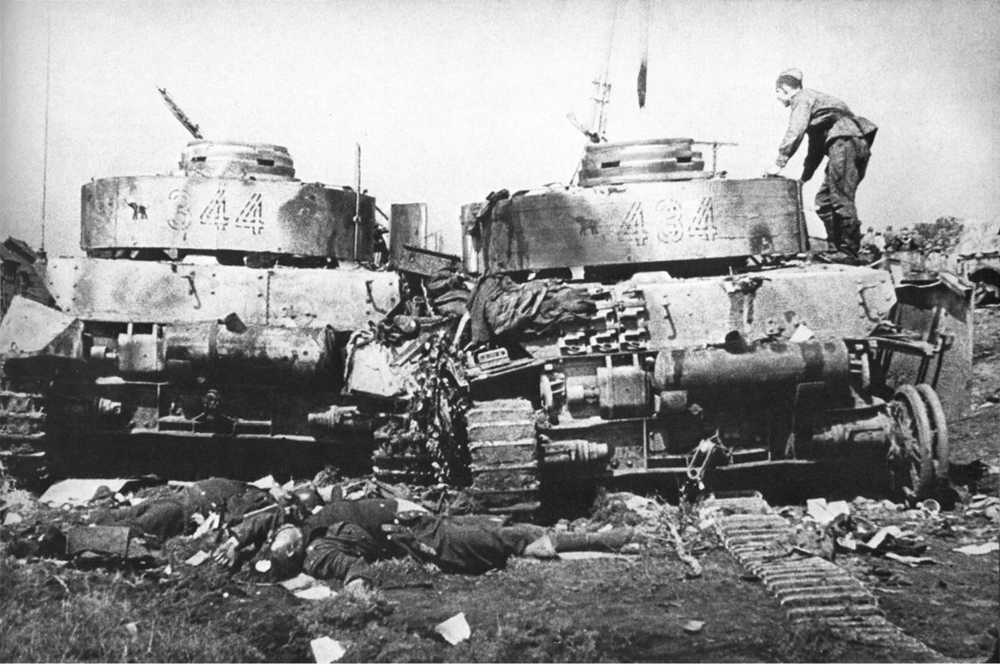

D-Day
 Op 6 juni 1944, na drie jaar Sovjet-druk, vielen de westerse geallieerden Noord-Frankrijk binnen. Nadat ze verschillende geallieerde divisies vanuit Italië hadden toegewezen, vielen ze ook Zuid-Frankrijk aan. Deze landingen waren succesvol en leidden tot de nederlaag van de Duitse legereenheden in Frankrijk. Parijs werd op 25 augustus bevrijd door het lokale verzet, bijgestaan door de Vrije Franse Strijdkrachten, beide geleid door generaal Charles de Gaulle, en de westerse geallieerden bleven tijdens het laatste deel van het jaar de Duitse troepen in West-Europa terugdringen. Een poging om oprukken naar Noord-Duitsland onder leiding van een grote luchtlandingsoperatie in Nederland is mislukt. Daarna drongen de westerse geallieerden langzaam Duitsland binnen, maar slaagden er niet in de rivier de Rur over te steken in een groot offensief. In Italië vertraagde de geallieerde opmars ook vanwege de laatste grote Duitse verdedigingslinie.
Operatie Market Garden
 Amerikaanse en Brits parachutisten landen in Eindhoven, Nijmegen en Arnhem om Nederland te bevrijden van Duitse bezetting en om een saillant van 103 km op Duits grondgebied te creëren met een bruggenhoofd over de rivier de Rijn, waardoor een geallieerde invasieroute naar Noord-Duitsland zou ontstaan.
De operatie slaagde erin de Nederlandse steden Eindhoven en Nijmegen te bevrijden, samen met vele steden, waardoor een 97 km saillant werd gecreëerd in het door Duitsland bezette grondgebied, waardoor V-2-raketlanceringslocaties werden beperkt.
Het slaagde er echter niet in om een bruggenhoofd over de Rijn veilig te stellen, waarbij de opmars bij de rivier werd gestopt.
Amerikaanse en Brits parachutisten landen in Eindhoven, Nijmegen en Arnhem om Nederland te bevrijden van Duitse bezetting en om een saillant van 103 km op Duits grondgebied te creëren met een bruggenhoofd over de rivier de Rijn, waardoor een geallieerde invasieroute naar Noord-Duitsland zou ontstaan.
De operatie slaagde erin de Nederlandse steden Eindhoven en Nijmegen te bevrijden, samen met vele steden, waardoor een 97 km saillant werd gecreëerd in het door Duitsland bezette grondgebied, waardoor V-2-raketlanceringslocaties werden beperkt.
Het slaagde er echter niet in om een bruggenhoofd over de Rijn veilig te stellen, waarbij de opmars bij de rivier werd gestopt.
Operatie Bagration
 Op 22 juni lanceerden de Sovjets een strategisch offensief in Wit-Rusland dat het Duitse Legergroep Centrum bijna volledig verwoestte. Kort daarna dwong een ander Sovjet strategisch offensief Duitse troepen uit West-Oekraïne en Oost-Polen. De Sovjets vormden het Poolse Comité voor Nationale Bevrijding om het grondgebied in Polen te controleren en de Poolse Armia Krajowa te bestrijden; Het Sovjet Rode Leger bleef in het Praga-district aan de andere kant van de Vistula en keek passief toe hoe de Duitsers de opstand van Warschau onderdrukten, geïnitieerd door de Armia Krajowa. De nationale opstand in Slowakije werd ook onderdrukt door de Duitsers. Het strategische offensief van het Sovjet Rode Leger in Oost-Roemenië sneed en vernietigde de aanzienlijke Duitse troepen daar af en veroorzaakte een succesvolle staatsgreep in Roemenië en Bulgarije, gevolgd door de verschuiving van die landen naar de geallieerde zijde.